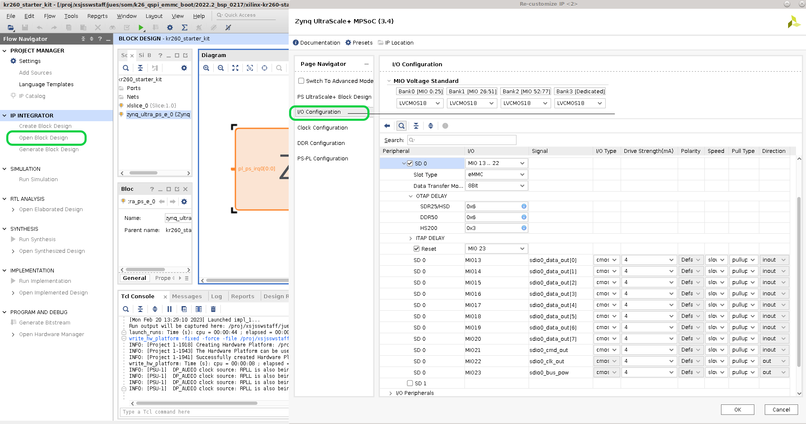

Boot Firmware - QSPI to eMMC boot for Production SOM¶
Introduction¶
The production SOM has an eMMC device populated, whereas the Starter Kit SOMs do not. Therefore, instead of Starter Kit’s QSPI->SD two stage boot process, developer can do a QSPI -> eMMC two stage process on the production SOM. This page gives an example of how to boot from QSPI -> eMMC for a production SOM that is mounted on a KV260 or KR260 carrier card. Note that removal of the SOM from a Xilinx produced Starter Kit voids its warranty. This workflow is only intended to provide an example for customers creating their own carrier card design and wanting to make use of a similar two-stage boot methodology.
User can also use the traditional monolithic boot (from eMMC) for production SOMs by using eMMC boot mode and placing boot files in eMMC. This method is not covered by this document and also requires user to set the BOOT_MODE pins to eMMC on their production carrier card.
This tutorial is targeted for 2022.2 releases and tool chains.
Prerequisite¶
Have read bootfw overview and its associated contents
Vivado or Vivado Lab installed on host computer
PetaLinux installed on host computer
Steps¶
There are many different ways to get a production SOM to boot from QSPI to eMMC. The following steps have been verified with Kria SOM:
Program production SOM with a QSPI binary using XSDB/XSCT and u-boot
Program production SOM eMMC with a Linux image, there are 2 ways to do this:
2.A Program the production SOM eMMC with Image Recovery App (does not support Ubuntu)
2.B Program the production SOM eMMC with Linux image targeted for eMMC using Linux booted from SD card with two steps: 2.B.a Boot Linux through SD 2.B.a Write to eMMC in Linux
Reboot in QSPI mode
Note that this tutorial assumes that you have generated an appropriate image to load into target eMMC - this step is not in the scope of this tutorial.
1. Program Production SOM with QSPI binary¶
Unlike the Starter Kit SOM, the production SOM is shipped without QSPI pre-populated. A developer must first program QSPI with the appropriate boot firmware so that SOM will boot to U-Boot via the QSPI contents and then hand off to the Linux OS image in eMMC. The full QSPI binary for Starter Kit SOM is not released, however, each components can be generated as outlined in bootfw overview and its pages. As a reference and an example for this guide, developer can use bootfw recipe in Yocto to generate an example QSPI binary for either KV260 or KR260 and program the QSPI image to a Kria production SOM.
Once you have a QSPI binary .bin file, it is time to program it to the board. Mount the Kria production SOM onto a carrier card, connect it to a host computer using micro-usb cable or a Xilinx Platform cable. Leave SD card slot empty and connect to power.
Program QSPI using XSDB/XSCT and u-boot¶
To program the QSPI using XSDB/XSCT, download boot.tcl file and put them in a <working_folder/> along with <QSPI_image>.bin. Then download the appropriate production .bsp file for production SOM card (e.g. xilinx-k26-som-<version>.bsp). Once downloaded, extract the bsp file and copy the artifacts needed for boot.tcl into <working_folder/>
```shell
petalinux-create -t project -s xilinx-<board>-<version>.bsp
cd xilinx-<board>-<version>/pre-built/linux/images/
cp bl31.elf pmufw.elf system.dtb u-boot.elf zynqmp_fsbl.elf <working_folder/>
```
Connect the serial port of carrier card with a uart listener so we can work in u-boot. Power on the board.
In xsdb/xsct, cd to <working_folder/> and source boot.tcl:
```shell
source boot.tcl
```
This will boot u-boot on the board. In the uart listener there should be print outs from u-boot. Press “enter” on uart listener to be at u-boot prompt, go back to xsdb and copy the QSPI image to DDR:
```shell
dow -force -data <QSPI image>.bin <ddr address>
```
example:
```shell
dow -force -data <QSPI image>.bin 0x80000
```
In u-boot, write the QSPI image in DDR to QSPI:
``` shell
ZynqMP> sf probe 0x0 0x0 0x0
ZynqMP> sf erase <offset address on flash> <greater than the size qspi bin>
ZynqMP> sf write <ddr address> <offset address on flash> <greater than the size qspi bin>
```
example:
``` shell
ZynqMP> sf probe 0x0 0x0 0x0
ZynqMP> sf erase 0x0 0x3000000
ZynqMP> sf write 0x80000 0x0 0x3000000
```
Now QSPI is programmed with an image that contains boot.bin files and image recovery app. They will be used in the following section.
2. Program Production SOM eMMC with Linux Image¶
There are two ways to program the eMMC - using image recovery application or using Linux.
2A Program Production SOM eMMC with Image Recovery App¶
The Image recovery tool has an option to upload an image file to eMMC on a production SOM. For details on set-up and use of the Recovery Tool, see UG1089 for KV260 and UG1092 for KR260.
The recovery tool currently only support .wic image upload and has a limit of 4GB upload file size. In this example we will limit the wic image targeted to eMMC to 2GB, using 0.5G for the boot partition and 1.5G for rootfs. Update the build/rootfs.wks in PetaLinux work folder before generating the wic image:
```shell
part /boot --source bootimg-partition --ondisk mmcblk0 --fstype=vfat --label boot --active --align 4 --fixed-size 500M
part / --source rootfs --ondisk mmcblk0 --fstype=ext4 --label root --align 4 --fixed-size 1500M
```
Note that after booting, use re-size tool to expand rootfs.
Then generate the .wic image with the .wks file and targeting running out of eMMC (mmcblk0):
```shell
petalinux-package --wic --bootfiles "ramdisk.cpio.gz.u-boot boot.scr Image system.dtb" --wks build/rootfs.wks --disk-name "mmcblk0"
```
The wic image can now be uploaded through Image Recovery app.
2B Program Production SOM eMMC with Linux Image using Linux¶
To write to eMMC from Linux, we first need to boot Linux that has eMMC awareness and ethernet capabilities. This is because the Linux images can be bigger than DDR space. Therefore, traditional eMMC programming through xsdb and ddr will not work in this case. We need to boot to a Linux image from SD, then transfer the final image file directly from host computer to eMMC on the Starter Kit through the network.
Please also note that the Starter Kit PetaLinux images (.wic files) and Ubuntu image (.img file) released are targeted to boot from SD card and not eMMC. The images targeted to eMMC will need to be re-generated with the appropriate hardware (eMMC enabled) and petalinux-package (with disk-name "mmcblk0"). The production SOM (e.g. Production K26 SOM) BSP’s prebuilt wic image, however, are targeted to eMMC and can be used as an example image to be programmed into the eMMC.
2.B.a Boot Linux through SD¶
We need to boot a Linux with eMMC and Ethernet support from SD card. The released K26 production SOM BSP by default has eMMC support but no awareness of any Starter Kit peripherals including Ethernet. The Starter Kit BSPs has support for Ethernet, but no eMMC support as the default Starter Kit SOM do not have eMMC. Therefore, we will need to create our own Linux wic image that has both Ethernet and eMMC support. The easiest way is to start from a Starter Kit SOM.
First, download the Starter Kit BSP (KV260/KR260 etc) pointed to from the Wiki page. Extract the BSP. We will use KR260 2022.2 BSP as an example here:
```shell
petalinux-create -t project -s xilinx-kr260-starterkit-v2022.2-10141622.bsp
cd xilinx-kr260-starterkit-2022.2/
```
Use Vivado and open hardware/xilinx-kr260-starterkit-2022.2/kr260_starter_kit.xpr in the folder. click on IP INTEGRATOR -> Open Block Design, and double click on ZYNQ UntraSCALE+ PS block to open the configuration wizard for the PS.
In the configuration wizard, go to I/O Configuration -> Low Speed -> Memory Interfaces -> SD, and check SD0, and match the configuration of SD 0 to that of the snippet below:

Then click on OKAY, save the project, and IP_ITEGRATOR -> Generate Block Design. After that is finished, click on File -> Export -> Export Hardware, leave the default settings, and choose a xsa file name such as kr260_starter_kit_emmc8bit, and click next until finish. This would generate an kr260_starter_kit_emmc8bit.xsa file.
Next, we need to import the new hardware configuration into the PetaLinux project. For more details review UG1144.
Here are the example commands to import the new .xsa and regenerate wic image:
```shell
petalinux-config --get-hw-description hardware/xilinx-kr260-starterkit-2022.2/kr260_starter_kit_emmc8bit.xsa #this will bring up a config GUI - just exit and let it configure
petalinux-build
petalinux-package --boot --u-boot --force
#for KV260, package to SD on mmcblk1:
petalinux-package --wic --images-dir images/linux/ --bootfiles "ramdisk.cpio.gz.u-boot,boot.scr,Image,system.dtb,system-zynqmp-sck-kv-g-revB.dtb" --disk-name "mmcblk1"
#for KR260, package to SD on sda/usb:
petalinux-package --wic --images-dir images/linux/ --bootfiles "ramdisk.cpio.gz.u-boot,boot.scr,Image,system.dtb,system-zynqmp-sck-kr-g-revB.dtb" --disk-name "sda"
```
Now you have a wic image in images/linux/ to program into SD card. Plug the SD card into SD slot and power on.
If doing this for the second time (e.g. if eMMC already have a Linux image), both u-boot and Linux will choose to boot to eMMC prior to try to boot to SD. In order to boot to SD instead of eMMC, press “enter” when u-boot prompts to stop autoboot. In u-boot, first wipe the eMMC, and then use commands to boot to PetaLinux image in sd:
Example commands to wipe mmc:
```bash
ZynqMP> mmc part #check existing partition map
ZynqMP> mmc dev 0 1 #switch to the boot partition (should be partition 1 according to outputs from previous command)
ZynqMP> mmc erase 0 0x200000 #erase the partition
```
Example commands to force u-boot boot out of SD (alternatively you can just power cycle again and let u-boot automatically pick SD card to boot from, since eMMC has been wiped clean):
For KV260, SD is mapped to mmc1:
``` bash
ZynqMP> setenv boot_targets mmc1
ZynqMP> run bootcmd_mmc1
```
For KR260, SD is behind the USB hub:
``` bash
ZynqMP> setenv boot_targets usb0
ZynqMP> run bootcmd_usb0
```
2.B.b Write to eMMC in Linux¶
Once booted to Linux, you should be able to see /dev/mmcblk0 - the eMMC partition. Note on KV260 starter kit, SD is mapped to SD1, while on KR260, SD is mapped to USB. So on KV260 there is also /dev/mmcblk1 - the SD partition. To double check, you can use this command:
```shell
cat /sys/class/mmc_host/mmc0/*/uevent
cat /sys/class/mmc_host/mmc1/*/uevent
```
if MMC_TYPE=MMC, it is an eMMC device, if MMC_TYPE=SD, it is a SD device.
Next, transfer the image file targeted for eMMC over using your favorite method (such as scp, nfs, copying over SD card etc…).
Using scp:
on target:
```shell
sudo chmod 666 /dev/mmcblk0 #add write permission for user
ifconfig #check ip address
```
on host computer, copy the image for emmc over (a .img file for Ubuntu or .wic file for PetaLinux, built to boot out of eMMC)
```
scp <image> petalinux@<ip address>:/dev/mmcblk0
```
using nfsroot:
On host computer, where <image> is a .img file for Ubuntu or .wic file for PetaLinux, built to boot out of eMMC:
```shell
nfsroot3 <path to be mounted where image is present>
```
On target:
```shell
mkdir /nfsroot
mount -t nfs -o nolock,proto=tcp,port=2049 10.10.70.101:/exports/root /nfsroot
#Use DD command to flash image
dd if=/nfsroot/<image> of=/dev/mmcblk0
```
3. Reboot in QSPI mode¶
Next, boot the board in QSPI - simply power cycle and it will boot from QSPI to eMMC.
Refer to u-boot handoff “Prioritized Boot Order” section, on 22.1 or later, u-boot will prioritize handling off from QSPI to eMMC on production SOM, if images are available.
License¶
Licensed under the Apache License, Version 2.0 (the “License”); you may not use this file except in compliance with the License.
You may obtain a copy of the License at http://www.apache.org/licenses/LICENSE-2.0
Unless required by applicable law or agreed to in writing, software distributed under the License is distributed on an “AS IS” BASIS, WITHOUT WARRANTIES OR CONDITIONS OF ANY KIND, either express or implied. See the License for the specific language governing permissions and limitations under the License.
Copyright© 2021 Xilinx